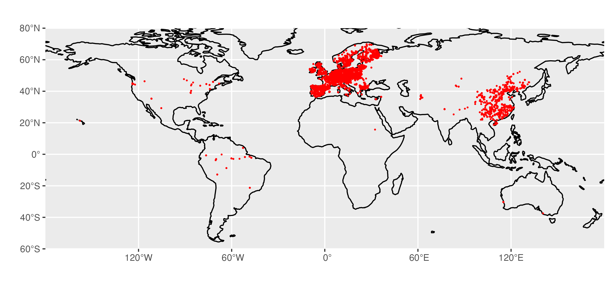

library(ggplot2)
library(sf)
library(rnaturalearth)
library(rnaturalearthdata)
# get coast outline
coast <- rnaturalearth::ne_coastline(scale = 110, returnclass = "sf")
ggplot() +
# plot coastline
geom_sf(data = coast,
colour = 'black',
size = 0.2) +
# set extent in longitude and latitude
coord_sf(
ylim = c(-60, 80),
expand = FALSE) + # to draw map strictly bounded by the specified extent
# plot points on map
geom_point(data = dfs, aes(x = lon, y = lat), color = "red", size = 0.2) +
labs(x = "", y = "") +
theme(legend.position = "bottom")2 Exercise
2.1 Literature
Read the paper by Ludwig et al. (2023) and answer the following questions:
- Explain the difference between a random cross-validation and a spatial cross-validation.
- In spatial upscaling, we model the target based on environmental covariates. This implies that we assume the training data to sufficiently represent the conditions on which the model will be applied for generating predictions. Prediction errors may increase with an increasing distance of the prediction location from the training locations. The paper by Ludwig et al. (2023) considers this “distance” as a geographical distance in Euclidian space. Do you see an alternative to measuring a distance that considers the task of spatial upscaling based on environmental covariates more directly?
2.2 Random cross-validation
Use Random Forest to perform a 5-fold cross-validation with the leaf N data (leafN) and the following predictors:
elv: Elevation above sea level (m)mat: mean annual temperature (degrees Celsius)map: mean annual precipitation (mm yr\(^{-1}\))ndep: atmospheric nitrogen deposition g m\(^{-2}\) yr\(^{-1}\)mai: mean annual daily irradiance \(\micro\)mol m\(^{-2}\) s\(^{-1}\)Species: species name of the plant on which leaf N was measured
Report the mean RMSE and R\(^2\) across cross-validation folds. Chose hyperparameters as mtry = 3 and min.node.size = 12 and others as their default in ranger::ranger().
2.3 Spatial cross-validation
Here is the distribution of our data across the globe.

- What do you observe? Discuss the potential implications of the geographical distribution of data points for spatial upscaling.
- Perform a spatial cross-validation. To do so, first identify geographical clusters of the data using the k-means algorithm (an unsupervised machine learning method), considering the longitude and latitude of data points and setting \(k = 5\). Plot points on a global map, showing the five clusters with distinct colors.
- Plot the distribution of leaf N by cluster.
- Split your data into five folds that correspond to the geographical clusters identified by in (2.), and fit a random forest model with the same hyperparameters as above and performing a 5-fold cross-validation with the clusters as folds. Report the RMSE and the R\(^2\) determined on each of the five folds
- Compare the results of the spatial cross-validation to the results of the random cross-validation and discuss reasons for why you observe a difference in the cross-validation metrics (if you do).
Hint
An example for how to use k-means is given in the tutorial on land cover classification.
Hint
Using a pre-defined grouping for delineating the folds in k-fold cross-validation can be done by first determining the indexes of rows for each group (a list of vectors that contain the row indexes of the training data). This can be done by:
# create folds based on clusters
# assuming 'df' contains the data and a column called 'cluster' containing the
# result of the k-means clustering
group_folds_train <- purrr::map(
seq(length(unique(df$cluster))),
~ {
df |>
select(cluster) |>
mutate(idx = 1:n()) |>
filter(cluster != .) |>
pull(idx)
}
)
group_folds_test <- purrr::map(
seq(length(unique(df$cluster))),
~ {
df |>
select(cluster) |>
mutate(idx = 1:n()) |>
filter(cluster == .) |>
pull(idx)
}
)Then, implement the custom cross-validation “by hand”. Code could look like this (But note that this is just for demo, and the code will not run without an error if you simply copy-and-paste. Complement in ... with your code):
# create a function that trains a random forest model on a given set of rows and
# predicts on a disjunct set of rows
train_test_by_fold <- function(df, idx_train, idx_val){
mod <- ranger::ranger(
x = ..., # data frame with columns corresponding to predictors
y = ... # a vector of the target values (not a data frame!)
)
pred <- predict(..., # the fitted model object
data = ... # a data frame with columns corresponding to predictors
)
rsq <- ... # the R-squared determined on the validation set
rmse <- ... # the root mean square error on the validation set
return(tibble(rsq = rsq, rmse = rmse))
}
# apply function on each custom fold and collect validation results in a nice
# data frame
out <- purrr::map2_dfr(
group_folds_train,
group_folds_test,
~train_test_by_fold(.x, .y)
) |>
mutate(test_fold = 1:5)
Expected Result
This is approximate because the k-means clustering contains a random element.
# # A tibble: 5 × 3
# rsq rmse test_fold
# <dbl> <dbl> <int>
# 1 0.0233 7.05 1
# 2 0.492 4.04 2
# 3 0.619 3.28 3
# 4 0.511 3.07 4
# 5 0.168 2.26 52.4 Environmental cross-validation
The central rationale for spatial uspcaling is that we can model based on relationships between the target variable and the environment. The geographic location is not among the predictors. Thus, as long as the training data covers a wide enough range of environmental conditions, we can model for any new location where environmental conditions are within that range, irrespective of its geographical position. The challenge is just that the training data often doesn’t cover all environmental conditions of the globe, yet upscaling is often done for the globe.
Anyways, let’s probe the generalisability of a model not in geographical space, but in environmental space.
- To do so, perform a custom cross-validation as above, but this time considering five clusters of points not in geographical space, but in environmental space - spanned by the mean annual precipitation and the mean annual temperature. Report the R-squared and the RMSE on the validation set of each of the five folds.
- Compare the results of the environmental cross-validation to the results of the random and the spatial cross-validation and discuss reasons for why you observe a difference in the cross-validation metrics (if you do).
Expected Result
This is approximate because the k-means clustering contains a random element.
# # A tibble: 5 × 3
# rsq rmse test_fold
# <dbl> <dbl> <int>
# 1 0.652 2.95 1
# 2 0.659 3.20 2
# 3 0.602 3.20 3
# 4 0.514 3.79 4
# 5 0.469 3.55 5